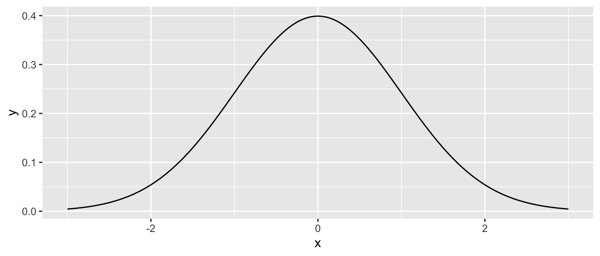
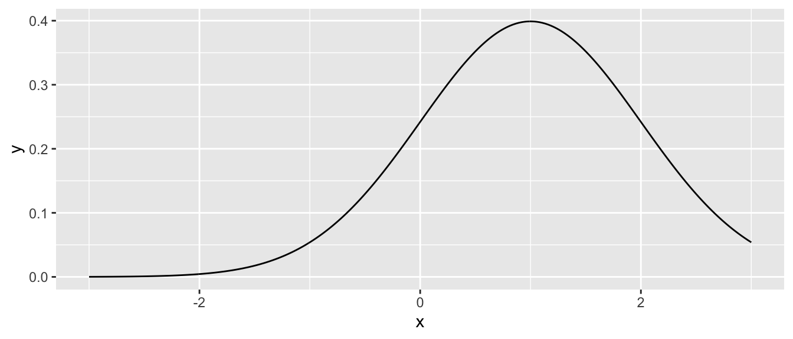
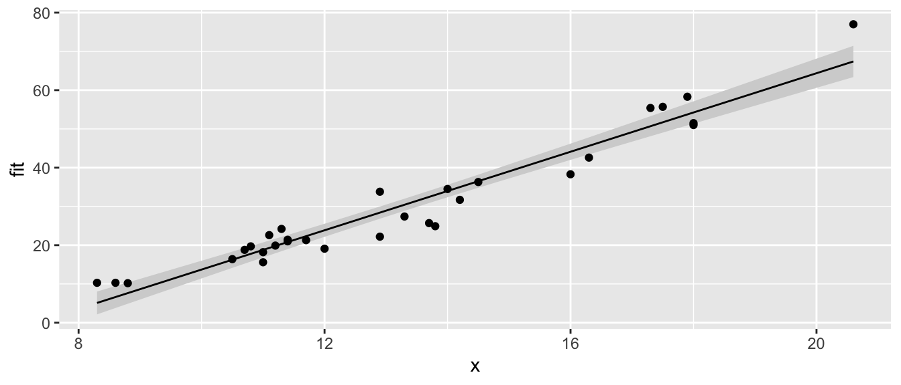
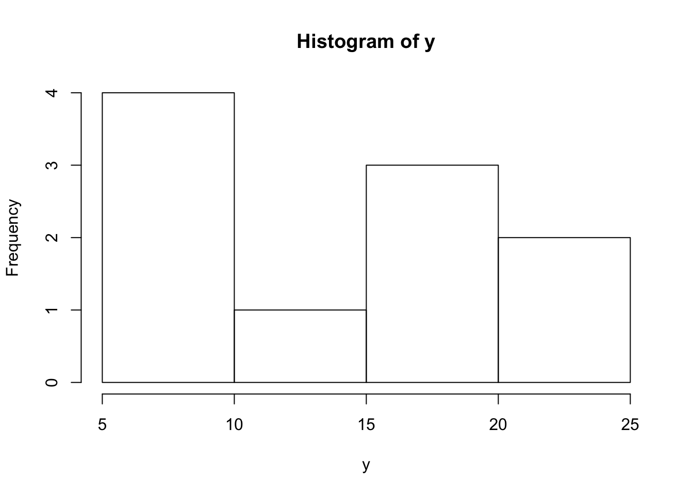
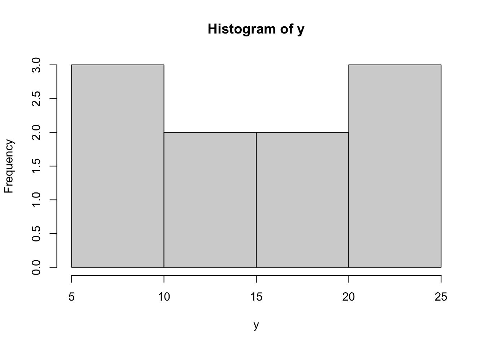
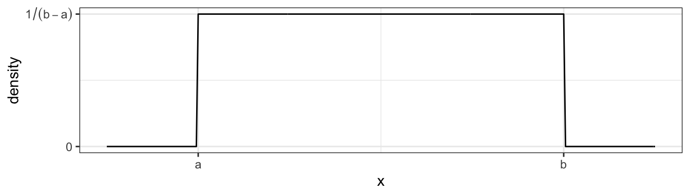

Chapter 10 Functions
library(tidyverse) It is very important to be able to define a piece of programming logic that is repeated often. For example, I don’t want to have to always program the mathematical code for calculating the sample variance of a vector of data. Instead I just want to call a function that does everything for me and I don’t have to worry about the details.
While hiding the computational details is nice, fundamentally writing functions allows us to think about our problems at a higher layer of abstraction. For example, most scientists just want to run a t-test on their data and get the appropriate p-value out; they want to focus on their problem and not how to calculate what the appropriate degrees of freedom are. Functions let us do that.
10.1 Basic function definition
In the course of your analysis, it can be useful to define your own functions. The format for defining your own function is
function.name <- function(arg1, arg2, arg3){
statement1
statement2
}where arg1 is the first argument passed to the function and arg2 is the second.
To illustrate how to define your own function, we will define a variance calculating function.
# define my function
my.var <- function(x) {
n <- length(x) # calculate sample size
xbar <- mean(x) # calculate sample mean
SSE <- sum( (x-xbar)^2 ) # calculate sum of squared error
v <- SSE / ( n - 1 ) # "average" squared error
return(v) # result of function is v
}# create a vector that I wish to calculate the variance of
test.vector <- c(1,2,2,4,5)
# calculate the variance using my function
calculated.var <- my.var( test.vector )
calculated.var## [1] 2.7Notice that even though I defined my function using x as my vector of data, and passed my function something named test.vector, R does the appropriate renaming.If my function doesn’t modify its input arguments, then R just passes a pointer to the inputs to avoid copying large amounts of data when you call a function. If your function modifies its input, then R will take the input data, copy it, and then pass that new copy to the function. This means that a function cannot modify its arguments. In Computer Science parlance, R does not allow for procedural side effects. Think of the variable x as a placeholder, with it being replaced by whatever gets passed into the function.
When I call a function, the function might cause something to happen (e.g. draw a plot) or it might do some calculates the result is returned by the function and we might want to save that. Inside a function, if I want the result of some calculation saved, I return the result as the output of the function. The way I specify to do this is via the return statement. Actually R doesn’t completely require this, and the result of the last statement is returned. Google’s R Style Guide recommends always using the return() statement for readability although Hadley’s Tidyverse Style Guide recommends not using return() except for early returns.
By writing a function, I can use the same chunk of code repeatedly. This means that I can do all my tedious calculations inside the function and just call the function whenever I want and happily ignore the details. Consider the function t.test() which we have used to do all the calculations in a t-test. We could write a similar function using the following code:
# define my function
one.sample.t.test <- function(input.data, mu0){
n <- length(input.data)
xbar <- mean(input.data)
s <- sd(input.data)
t <- (xbar - mu0)/(s / sqrt(n))
if( t < 0 ){
p.value <- 2 * pt(t, df=n-1)
}else{
p.value <- 2 * (1-pt(t, df=n-1))
}
# we haven't addressed how to print things in a organized
# fashion, the following is ugly, but works...
# Notice that this function returns a character string
# with the necessary information in the string.
return( paste('t =', round(t, digits=3), ' and p.value =', round(p.value, 3)) )
}# create a vector that I wish apply a one-sample t-test on.
test.data <- c(1,2,2,4,5,4,3,2,3,2,4,5,6)
one.sample.t.test( test.data, mu0=2 )## [1] "t = 3.157 and p.value = 0.008"Nearly every function we use to do data analysis is written in a similar fashion. Somebody decided it would be convenient to have a function that did an ANOVA analysis and they wrote something similar to the above function, but is a bit grander in scope. Even if you don’t end up writing any of your own functions, knowing how to will help you understand why certain functions you use are designed the way they are.
10.2 Parameter Defaults
When I define a function and can let it take as many arguments as I want and I can also give default values to the arguments. For example we can define the normal density function using the following code which gives a default mean of \(0\) and default standard deviation of \(1\).
# a function that defines the shape of a normal distribution.
# by including mu=0, we give a default value that the function
# user can override
dnorm.alternate <- function(x, mu=0, sd=1){
out <- 1 / (sd * sqrt(2*pi)) * exp( -(x-mu)^2 / (2 * sd^2) )
return(out)
}# test the function to see if it works
dnorm.alternate(1)## [1] 0.2419707dnorm.alternate(1, mu=1)## [1] 0.3989423# Lets test the function a bit more by drawing the height
# of the normal distribution a lots of different points
# ... First the standard normal!
data.frame( x = seq(-3, 3, length=601) ) %>%
mutate( y = dnorm.alternate(x) ) %>% # use default mu=0, sd=1
ggplot( aes(x=x, y=y) ) + geom_line()
# next a normal with mean 1, and standard deviation 1
data.frame( x = seq(-3, 3, length=601) ) %>%
mutate( y = dnorm.alternate(x, mu=1) ) %>% # use mu=1, sd=1
ggplot( aes(x=x, y=y) ) + geom_line()
Many functions that we use have defaults that we don’t normally mess with. For example, the function mean() has an option the specifies what it should do if your vector of data has missing data. The common solution is to remove those observations, but we might have wanted to say that the mean is unknown one component of it was unknown.
x <- c(1,2,3,NA) # fourth element is missing
mean(x) # default is to return NA if any element is missing## [1] NAmean(x, na.rm=TRUE) # Only average the non-missing data## [1] 2As you look at the help pages for different functions, you’ll see in the function definitions what the default values are. For example, the function mean has another option, trim, which specifies what percent of the data to trim at the extremes. Because we would expect mean to not do any trimming by default, the authors have appropriately defined the default amount of trimming to be zero via the definition trim=0.
10.3 Ellipses
When writing functions, I occasionally have a situation where I call function a() and function a() needs to call another function, say b(), and I want to pass an unusual parameter to that function. To do this, I’ll use a set of three periods called an ellipses. What these do is represent a set of parameter values that will be passed along to a subsequent function.For example the following code takes the result of a simple linear regression and plots the data and the regression line and confidence region (basically I’m recreating a function that does the same thing as ggplot2’s geom_smooth() layer). I might not want to specify (and give good defaults) to every single graphical parameter that the plot() function supports. Instead I’ll just use the ‘…’ argument and pass any additional parameters to the plot function.
# a function that draws the regression line and confidence interval
# notice it doesn't return anything... all it does is draw a plot
show.lm <- function(m, interval.type='confidence', fill.col='light grey', ...){
df <- data.frame(
x = m$model[,2], # extract the predictor variable
y = m$model[,1] # extract the response
)
df <- df %>% cbind( predict(m, interval=interval.type) )
P <- ggplot(df, aes(x=x) ) +
geom_ribbon( aes(ymin=lwr, ymax=upr), fill=fill.col ) +
geom_line( aes(y=fit), ... ) +
geom_point( aes(y=y), ... ) +
labs(...)
print(P)
} This function looks daunting, but we experiment to see what it does.
# first define a simple linear model from our cherry tree data
m <- lm( Volume ~ Girth, data=trees )
# call the function with no extraneous parameters
show.lm( m )
# Pass arguments that will just be passed along to the geom layers
show.lm( m, color='Red', title='Relationship between Girth and Volume')## Warning: Ignoring unknown parameters: title
## Warning: Ignoring unknown parameters: title
This type of trick is done commonly. Look at the help files for hist() and qqnorm() and you’ll see the ellipses used to pass graphical parameters along to sub-functions. Functions like lm() use the ellipses to pass arguments to the low level regression fitting functions that do the actual calculations. By only including these parameters via the ellipses, must users won’t be tempted to mess with the parameters, but experts who know the nitty-gritty details can still modify those parameters.
10.4 Function Overloading
Frequently the user wants to inspect the results of some calculation and display a variable or object to the screen. The print() function does exactly that, but it acts differently for matrices than it does for vectors. It especially acts different for lists that I obtained from a call like lm() or aov().
The reason that the print function can act differently depending on the object type that I pass it is because the function print() is overloaded. What this means is that there is a print.lm() function that is called whenever I call print(obj) when obj is the output of an lm() command.
Recall that we initially introduced a few different classes of data, Numerical, Factors, and Logicals. It turns out that I can create more types of classes.
x <- seq(1:10)
y <- 3+2*x+rnorm(10)
h <- hist(y) # h should be of class "Histogram"
class(h)## [1] "histogram"model <- lm( y ~ x ) # model is something of class "lm"
class(model)## [1] "lm"Many common functions such as plot() are overloaded so that when I call the plot function with an object, it will in turn call plot.lm() or plot.histogram() as appropriate. When building statistical models I am often interested in different quantities and would like to get those regardless of the model I am using. Below are a list of functions that work whether I fit a model via aov(), lm(), glm(), or gam().
| Quantity | Function Name |
|---|---|
| Residuals | resid( obj ) |
| Model Coefficients | coef( obj ) |
| Summary Table | summary( obj ) |
| ANOVA Table | anova( obj ) |
| AIC value | AIC( obj ) |
For the residual function, there exists a resid.lm() function, and resid.gam() and it is these functions are called when we run the command resid( obj ).
10.5 Debugging
When writing code, it is often necessary to figure out why the written code does not behave in the manner the writer expects. This process can be extremely challenging. Various types of tools have been developed and are incorporated in any reasonable integrated development environment (including RStudio!). All of the techniques we’ll discuss are intended to help the developer understand exactly what the variable environment is like during the code execution.
RStudio has a support article about using the debugger mode in a variety of situations so these notes won’t go into extreme detail about different scenarios. Instead we’ll focus on how to debug.
10.5.1 Rmarkdown Recommendations
Because Rmarkdown documents are knitted using completely a completely fresh instance of R, I recommend that whenever you start up RStudio, it starts with a completely fresh instance of R. This means that it shouldn’t load any history or previously created objects. To make this the default behavior, go to the RStudio -> Preferences on a Mac or Tools -> Global Options on a PC. On the R General section un-select all of the Workspace and History options.
10.5.2 Step-wise Execution
Often we can understand where an error is being introduced by simply running each step individually and inspecting the result. This is where the Evironment tab in the top right panel (unless you’ve moved it…) becomes helpful. By watching how the objects of interest change as we step through the code, we can more easily see where errors have occurred. For complicated objects such as data.frames, I find it helpful to have them opened in a View tab.
iris.summary <- iris %>%
mutate(Sepal.Area = Sepal.Width * Sepal.Length,
Petal.Area = Petal.Width * Petal.Length) %>%
select(Species, Sepal.Area, Petal.Area) %>%
group_by(Speces) %>%
summarize( Mean.Sepal.Area = mean(Sepal.Area),
Mean.Petal.Area = mean(Petal.Area) )In this case, I would execute the iris %>% ... section of code and add one command after another until I finally found the line of code that produces the error. Once the line containing the error has been identified, I look for misspellings, misplaced parentheses, or a disconnect between what the input structure is versus what the code expects.
10.5.3 Print Statements
Once we start writing code with loops and functions, a simple step-by-step evaluation won’t suffice. An easy way to quickly see what the state of a variable is at some point in the code is to add a print() command that outputs some useful information about the environment.
#' Compute a Factorial. e.g. 5! = 5*4*3*2*1
#' @param n A positive integer
#' @return The value of n!
factorial <- function(n){
output <- NULL
for( i in 1:n ){
output <- output*i
}
return(output)
}
factorial(5)## integer(0)In this case, I would add a few print statements such as the following:
#' Compute a Factorial. e.g. 5! = 5*4*3*2*1
#' @param n A positive integer
#' @return The value of n!
factorial <- function(n){
output <- NULL
print(paste('At Start and output = ', output))
for( i in 1:n ){
output <- output*i
print(paste('In Loop and i = ', i,' and output = ', output))
}
return(output)
}
factorial(5)## [1] "At Start and output = "
## [1] "In Loop and i = 1 and output = "
## [1] "In Loop and i = 2 and output = "
## [1] "In Loop and i = 3 and output = "
## [1] "In Loop and i = 4 and output = "
## [1] "In Loop and i = 5 and output = "## integer(0)Hopefully we can now see that multiplying a NULL value by anything else continues to result in NULL values.
10.5.4 browser
Debugging is best done by stepping through the code while paying attention to the current values of all the variables of interest. Modern developer environments include a debugger which allows you to step through your code, one command at a time, while simultaneously showing you the variables of interest. To get into this environment, we need to set a breakpoint. This can be done in R-scripts by clicking on the line number, but in Rmarkdown files, it is done by including the command browser() into your code.
In our factorial function, we can set a breakpoint via the following
#' Compute a Factorial. e.g. 5! = 5*4*3*2*1
#' @param n A positive integer
#' @return The value of n!
factorial <- function(n){
browser()
output <- NULL
for( i in 1:n ){
output <- output*i
}
return(output)
}
# Now run the function
factorial(5)This allows us to step through the function while simultaneously keeping track of all the variables we are interested in.
10.6 Scope
Consider the case where we make a function that calculates the trimmed mean. A good implementation of the function is given here.
#' Define a function for the trimmed mean
#' @param x A vector of values to be averaged
#' @param k The number of elements to trim on either side
#' @return A scalar
trimmed.mean <- function(x, k=0){
x <- sort(x) # arrange the input according magnitude
n <- length(x) # n = how many observations
if( k > 0){
x <- x[c(-1*(1:k), -1*((n-k+1):n))] # remove first k, last k
}
tm <- sum(x) / length(x) # mean of the remaining observations
return( tm )
}
x <- c(10:1,50) # 10, 9, 8, ..., 1
output <- trimmed.mean(x, k=2)
output## [1] 6x # notice x is unchanged## [1] 10 9 8 7 6 5 4 3 2 1 50Notice that even though I passed x into the function and then sorted it, x remained unsorted outside the function. When I modified x, R made a copy of x and sorted the copy that belonged to the function so that I didn’t modify a variable that was defined outside of the scope of my function. But what if I didn’t bother with passing x and k. If I don’t pass in the values of x and k, then R will try to find them in my current work space.
# a horribly defined function that has no parameters
# but still accesses something called "x"
trimmed.mean <- function(){
x <- sort(x) # Access global x, sort and save in local environment
n <- length(x)
if( k > 0){ # Accessing the Global k
x <- x[c(-1*(1:k), -1*((n-k+1):n))]
}
tm <- sum(x)/length(x)
return( tm )
}
x <- c( 50, 10:1 ) # data to trim
k <- 2
trimmed.mean() # amazingly this still works## [1] 6# but what if k wasn't defined?
rm(k) # remove k
trimmed.mean() # now the function can't find anything named k and throws and error.## Error in trimmed.mean(): object 'k' not foundSo if I forget to pass some variable into a function, but it happens to be defined outside the function, R will find it. It is not good practice to rely on that because how do I take the trimmed mean of a vector named z? Worse yet, what if the variable x changes between runs of your function? What should be consistently giving the same result keeps changing. This is especially insidious when you have defined most of the arguments the function uses, but missed one. Your function happily goes to the next higher scope and sometimes finds it.
When executing a function, R will have access to all the variables defined in the function, all the variables defined in the function that called your function and so on until the base work space. However, you should never let your function refer to something that is not either created in your function or passed in via a parameter.
10.7 Exercises
Write a function that calculates the density function of a Uniform continuous variable on the interval \(\left(a,b\right)\). The function is defined as \[f\left(x\right)=\begin{cases} \frac{1}{b-a} & \;\;\;\textrm{if }a\le x\le b\\ 0 & \;\;\;\textrm{otherwise} \end{cases}\] which looks like this  We want to write a function
duniform(x, a, b)that takes an arbitrary value ofxand parameters a and b and return the appropriate height of the density function. For various values ofx,a, andb, demonstrate that your function returns the correct density value.Write your function without regard for it working with vectors of data. Demonstrate that it works by calling the function with a three times, once where \(x< a\), once where \(a < x < b\), and finally once where \(b < x\).
Next we force our function to work correctly for a vector of
xvalues. Modify your function in part (a) so that the core logic is inside aforstatement and the loop moves through each element ofxin succession. Your function should look something like this:duniform <- function(x, a, b){ output <- NULL for( i in ??? ){ # Set the for loop to look at each element of x if( x[i] ??? ){ # What should this logical expression be? # ??? Something ought to be saved in output[i] }else{ # ??? Something else ought to be saved in output[i] } } return(output) }Verify that your function works correctly by running the following code:
data.frame( x=seq(-1, 12, by=.001) ) %>% mutate( y = duniform(x, 4, 8) ) %>% ggplot( aes(x=x, y=y) ) + geom_step()Install the R package
microbenchmark. We will use this to discover the average duration your function takes.microbenchmark::microbenchmark( duniform( seq(-4,12,by=.0001), 4, 8), times=100)This will call the input R expression 100 times and report summary statistics on how long it took for the code to run. In particular, look at the median time for evaluation.
Instead of using a
forloop, it might have been easier to use anifelse()command. Rewrite your function to avoid theforloop and just use anifelse()command. Verify that your function works correctly by producing a plot, and also run themicrobenchmark(). Which version of your function was easier to write? Which ran faster?
I very often want to provide default values to a parameter that I pass to a function. For example, it is so common for me to use the
pnorm()andqnorm()functions on the standard normal, that R will automatically usemean=0andsd=1parameters unless you tell R otherwise. To get that behavior, we just set the default parameter values in the definition. When the function is called, the user specified value is used, but if none is specified, the defaults are used. Look at the help page for the functionsdunif(), and notice that there are a number of default parameters. For yourduniform()function provide default values of0and1foraandb. Demonstrate that your function is appropriately using the given default values.A common data processing step is to standardize numeric variables by subtracting the mean and dividing by the standard deviation. Create a function that takes a vector of numerical values and produces an output vector of the standardized values. We will then apply this function to each numeric column in a data frame using the
dplyr::mutate_if()command. This is often done in model algorithms that rely on numerical optimization methods to find a solution. By keeping the scales of different predictor covariates the same, the numerical optimization routines generally work better.standardize <- function(x){ ## What goes here? (x-mean(x))/sd(x) } data( 'iris' ) # Graph the pre-transformed data. ggplot(iris, aes(x=Sepal.Length, y=Sepal.Width, color=Species)) + geom_point() + labs(title='Pre-Transformation') # Standardize all of the numeric columns # across() selects columns and applies a function to them # there column select requires a dplyr column select command such # as starts_with(), contains(), or where(). The where() command # allows us to use some logical function on the column to decide # if the function should be applied or not. iris.z <- iris %>% mutate( across(where(is.numeric), standardize) ) # Graph the post-transformed data. ggplot(iris.z, aes(x=Sepal.Length, y=Sepal.Width, color=Species)) + geom_point() + labs(title='Post-Transformation')In this example, we’ll write a function that will output a vector of the first \(n\) terms in the child’s game Fizz Buzz. The goal is to count as high as you can, but for any number evenly divisible by 3, substitute “Fizz” and any number evenly divisible by 5, substitute “Buzz”, and if it is divisible by both, substitute “Fizz Buzz”. So the sequence will look like 1, 2, Fizz, 4, Buzz, Fizz, 7, 8, Fizz, … Hint: The
paste()function will squish strings together, the remainder operator is%%where it is used as9 %% 3 = 0. This problem was inspired by a wonderful YouTube video that describes how to write an appropriate loop to do this in JavaScript, but it should be easy enough to interpret what to do in R. I encourage you to try to write your function first before watching the video.The
dplyr::fill()function takes a table column that has missing values and fills them with the most recent non-missing value. For this problem, we will create our own function to do the same.
#' Fill in missing values in a vector with the previous value.
#'
#' @parm x An input vector with missing values
#' @result The input vector with NA values filled in.
myFill <- function(x){
# Stuff in here!
}The following function call should produce the following ouput
test.vector <- c('A',NA,NA, 'B','C', NA,NA,NA)
myFill(test.vector)## NULL[1] "A" "A" "A" "B" "C" "C" "C" "C"A common statistical requirement is to create bootstrap confidence intervals for a model statistic. This is done by repeatedly re-sampling with replacement from our original sample data, running the analysis for each re-sample, and then saving the statistic of interest. Below is a function
boot.lmthat bootstraps the linear model using case re-sampling.#' Calculate bootstrap CI for an lm object #' #' @param model #' @param N boot.lm <- function(model, N=1000){ data <- model$model # Extract the original data formula <- model$terms # and model formula used # Start the output data frame with the full sample statistic output <- broom::tidy(model) %>% select(term, estimate) %>% pivot_wider(term, estimate) pivot_wider(names_from=term, values_from=estimate) for( i in 1:N ){ data <- data %>% sample_frac( replace=TRUE ) model.boot <- lm( formula, data=data) coefs <- broom::tidy(model.boot) %>% select(term, estimate) %>% pivot_wider(names_from=term, values_from=estimate) output <- output %>% rbind( coefs ) } return(output) } # Run the function on a model m <- lm( Volume ~ Girth, data=trees ) boot.dist <- boot.lm(m) # If boot.lm() works, then the following produces a nice graph boot.dist %>% gather('term','estimate') %>% ggplot( aes(x=estimate) ) + geom_histogram() + facet_grid(.~term, scales='free')This code does not correctly calculate a bootstrap sample for the model coefficients. Figure out where the mistake is. Hint: Even if you haven’t studied the bootstrap, my description above gives enough information about the bootstrap algorithm to figure this out.